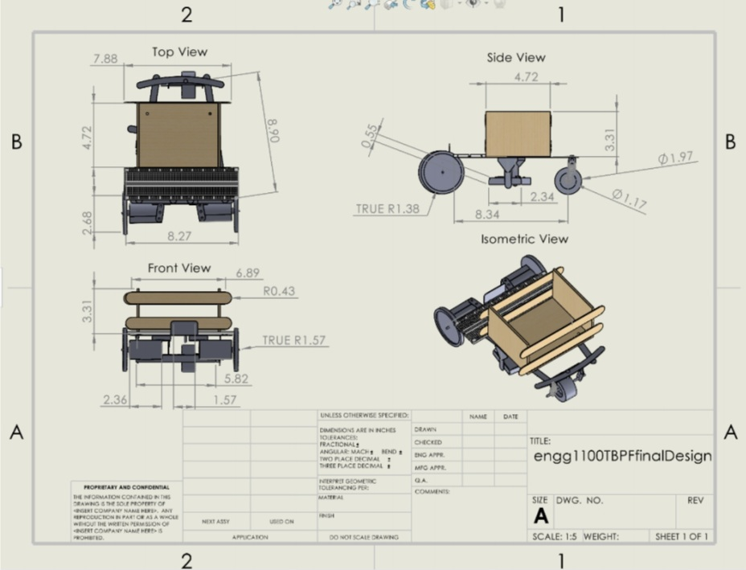
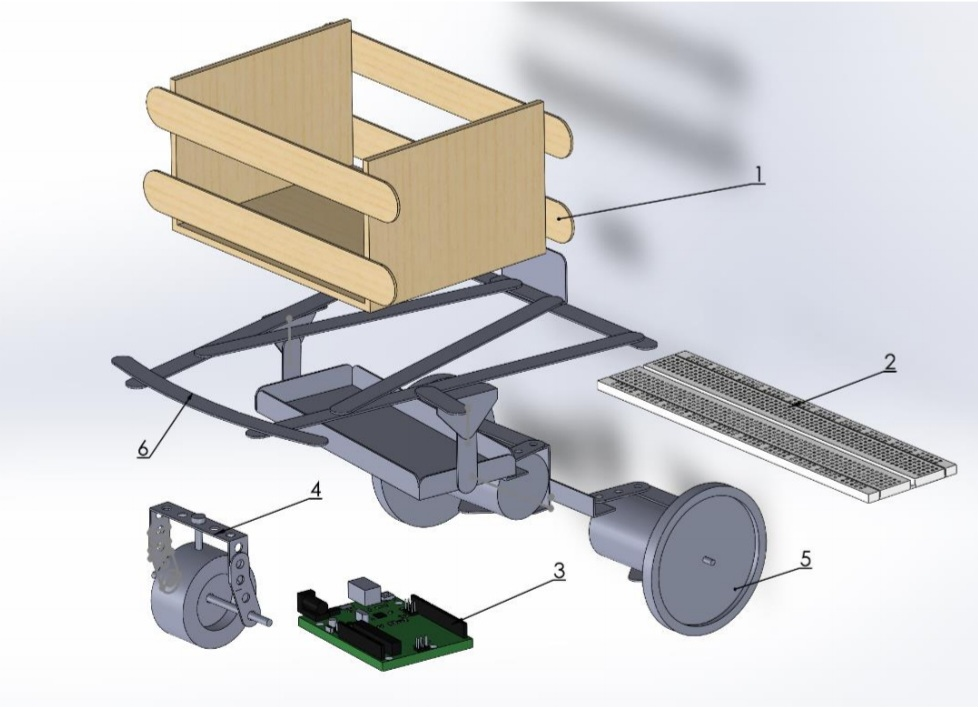

Teddy Bear Pathfinder
The goal of the Teddy Bear Pathfinder project was to design and build an autonomous vehicle capable of transporting a teddy bear passenger through a predetermined obstacle course. As part of a team of six students, I took on the role of designing and constructing the teddy bear wheelchair that would safely secure the passenger within the pathfinder chassis.
The pathfinder chassis was fabricated primarily using components from a Meccano building set, including an array of metal brackets, plates, rods, nuts, and bolts which were fastened together to form the base frame. Two DC motors were mounted at the rear of the chassis using a combination of Meccano parts and custom laser-cut acrylic pieces. These motors powered the rear wheels of the vehicle through a direct drive system. The front wheel was unpowered and able to rotate freely to allow for steering the vehicle. Power was provided by AA batteries mounted in a custom holder, which also housed an Arduino Uno microcontroller. This Arduino was programmed to control the speed and spinning direction of the motors, enabling autonomous navigation of the pathfinder.
This project provided an impactful learning experience in designing a component to successfully integrate with a larger multifaceted system. I gained valuable skills in creating functional prototypes, refining details, and implementing aesthetics. The final pathfinder vehicle was able to successfully carry its teddy bear passenger through the obstacle course autonomously. This project enhanced my engineering design abilities and reaffirmed my passion for this kind of innovative technical work.
Below is the final design and product for the Teddy Bear Pathfinder

Below is the 2D Solidworks design, as well as it's exploded view.
 